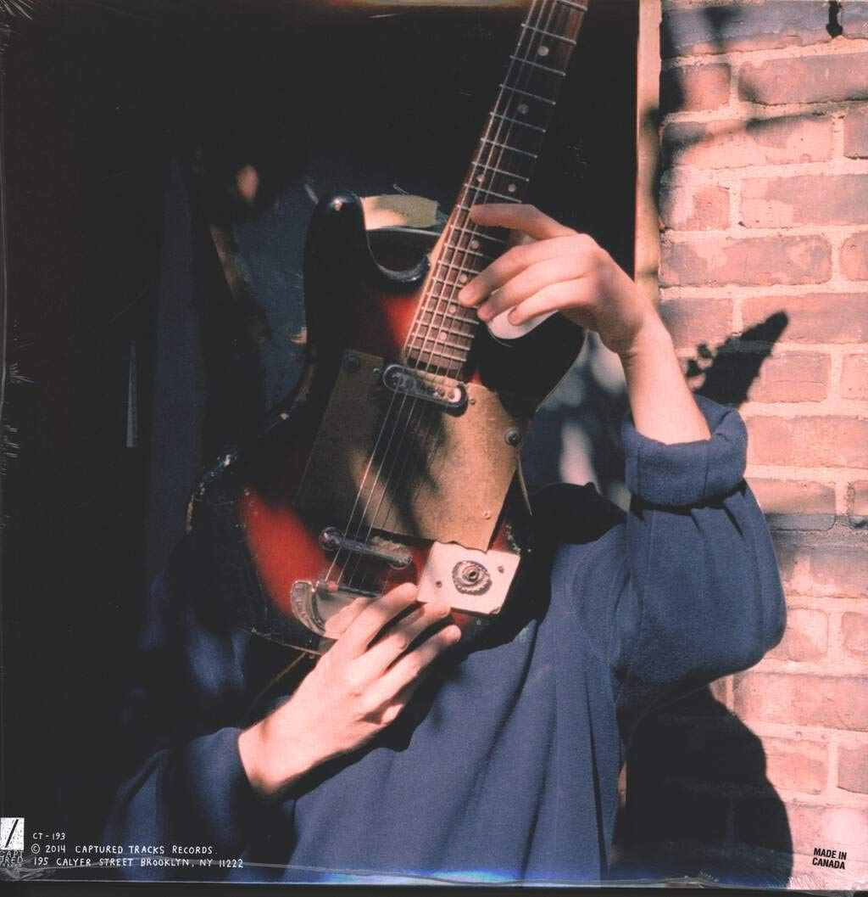

Salad Days
Released January 2014
Personel
- Mac DeMarco, songwriting, all instruments, mixing
- Josh Bonati, mastering
- Coley Brown, photography
Upon its release, Salad Days was met with critical acclaim. At Metacritic, which assigns a weighted mean rating out of 100 to reviews from mainstream critics, the album received an average score of 82 out of 100 based on 27 reviews, which indicates "universal acclaim".NME named Salad Days the second best album of 2014 while the tracks "Chamber of Reflection" and "Passing Out Pieces" placed at numbers 10 and 26 respectively on their list of the top 50 tracks of 2014.

Top Songs
- Salad Days
- Blue Boy
- Brother
- Let Her Go
- Chamber Of Reflection
- Passing Out Pieces
Demo Exclusive
- Pepperony Playboy
- Passing Out Pieces Of Me
- Avocado Andrew
- Potato Boy
- Ken The Wolf Boy
- On the sound of Salad Days, DeMarco said: "I didn't want to freak anybody out with a huge sound change. I wanted to transition without changing the vibe too much.'
- Regarding the album's lyrical content, DeMarco consciously decided to write a more personal record than its predecessor, 2 (2012), stating there wouldn't be any songs about "absolutely nothing", and that he "needed to get this shit out".
- Mac Demarco, demo cover
- To promote the album, DeMarco went on a tour that spanned across North America, South America and Europe.